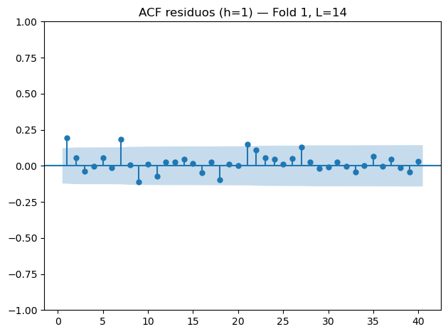
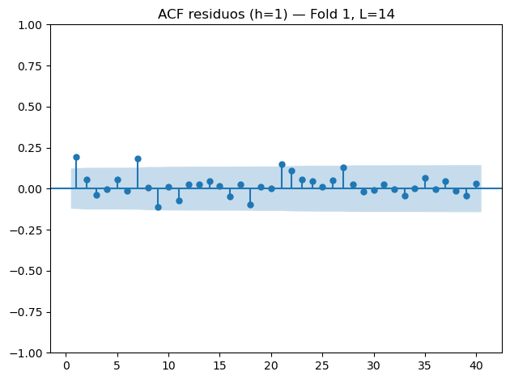

Prediccion de volatibilidad del BITCOIN usando series de tiempo#
import pandas as pd
btc = pd.read_csv('btc_1d_data_2018_to_2025.csv')
btc
| Open time | Open | High | Low | Close | Volume | Close time | Quote asset volume | Number of trades | Taker buy base asset volume | Taker buy quote asset volume | Ignore | |
|---|---|---|---|---|---|---|---|---|---|---|---|---|
| 0 | 2018-01-01 | 13715.65 | 13818.55 | 12750.00 | 13380.00 | 8609.915844 | 2018-01-01 23:59:59.999 | 1.147997e+08 | 105595 | 3961.938946 | 5.280975e+07 | 0 |
| 1 | 2018-01-02 | 13382.16 | 15473.49 | 12890.02 | 14675.11 | 20078.092111 | 2018-01-02 23:59:59.999 | 2.797171e+08 | 177728 | 11346.326739 | 1.580801e+08 | 0 |
| 2 | 2018-01-03 | 14690.00 | 15307.56 | 14150.00 | 14919.51 | 15905.667639 | 2018-01-03 23:59:59.999 | 2.361169e+08 | 162787 | 8994.953566 | 1.335873e+08 | 0 |
| 3 | 2018-01-04 | 14919.51 | 15280.00 | 13918.04 | 15059.54 | 21329.649574 | 2018-01-04 23:59:59.999 | 3.127816e+08 | 170310 | 12680.812951 | 1.861168e+08 | 0 |
| 4 | 2018-01-05 | 15059.56 | 17176.24 | 14600.00 | 16960.39 | 23251.491125 | 2018-01-05 23:59:59.999 | 3.693220e+08 | 192969 | 13346.622293 | 2.118299e+08 | 0 |
| ... | ... | ... | ... | ... | ... | ... | ... | ... | ... | ... | ... | ... |
| 2589 | 2025-02-02 | 100635.66 | 101456.60 | 99747.59 | 99796.00 | 3149.622330 | 2025-02-02 23:59:59.999 | 3.167280e+08 | 558753 | 1223.084700 | 1.231618e+08 | 0 |
| 2590 | 2025-02-03 | 97700.59 | 97782.79 | 91231.00 | 94495.21 | 20992.955720 | 2025-02-03 23:59:59.999 | 1.983835e+09 | 2309956 | 9239.171560 | 8.738586e+08 | 0 |
| 2591 | 2025-02-04 | 101328.51 | 101660.94 | 100743.33 | 101367.77 | 1910.355420 | 2025-02-04 23:59:59.999 | 1.933988e+08 | 208849 | 822.417140 | 8.326802e+07 | 0 |
| 2592 | 2025-02-05 | 97763.14 | 98930.44 | 97131.43 | 97589.30 | 8160.567950 | 2025-02-05 23:59:59.999 | 7.990502e+08 | 1597813 | 3672.410530 | 3.596230e+08 | 0 |
| 2593 | 2025-02-06 | 96612.44 | 99120.00 | 96430.78 | 98329.13 | 8315.064450 | 2025-02-06 23:59:59.999 | 8.145593e+08 | 1471991 | 4089.626850 | 4.005688e+08 | 0 |
2594 rows × 12 columns
import pandas as pd
btc = btc[['Close time', 'Close']].dropna().reset_index(drop=True)
btc
| Close time | Close | |
|---|---|---|
| 0 | 2018-01-01 23:59:59.999 | 13380.00 |
| 1 | 2018-01-02 23:59:59.999 | 14675.11 |
| 2 | 2018-01-03 23:59:59.999 | 14919.51 |
| 3 | 2018-01-04 23:59:59.999 | 15059.54 |
| 4 | 2018-01-05 23:59:59.999 | 16960.39 |
| ... | ... | ... |
| 2589 | 2025-02-02 23:59:59.999 | 99796.00 |
| 2590 | 2025-02-03 23:59:59.999 | 94495.21 |
| 2591 | 2025-02-04 23:59:59.999 | 101367.77 |
| 2592 | 2025-02-05 23:59:59.999 | 97589.30 |
| 2593 | 2025-02-06 23:59:59.999 | 98329.13 |
2594 rows × 2 columns
import pandas as pd
import numpy as np
import matplotlib.pyplot as plt
from statsmodels.graphics.tsaplots import plot_acf
btc = btc.rename(columns={"Close time": "Date"})
btc["Date"] = pd.to_datetime(btc["Date"])
btc = btc.sort_values("Date").reset_index(drop=True)
Conceptos clave en series financieras#
1. Retornos logarítmicos#
En lugar de trabajar directamente con los precios, en finanzas se utilizan retornos para medir las variaciones de un activo.
Existen dos formas principales:
Retorno simple:
Retorno logarítmico:
✅ Ventajas de los retornos logarítmicos#
Aditividad en el tiempo: los retornos logarítmicos se pueden sumar para obtener el retorno total de varios períodos:
Simetría: corrige la asimetría que aparece con los retornos simples (ej. +10% seguido de -10%).
Mejor ajuste estadístico: suelen aproximarse mejor a distribuciones normales.
Escalabilidad: funcionan igual para datos diarios, semanales o mensuales.
2. Volatilidad histórica#
La volatilidad mide la dispersión de los retornos en un período de tiempo.
Se calcula como la desviación estándar de los retornos logarítmicos en una ventana de tamaño ( n ):
donde:
\(r_{t-i}\) → retorno logarítmico del día \(t-i\)
\( \bar{r} \) → media de los retornos en la ventana
\(n\) → número de días en la ventana
Para comparabilidad se suele anualizar la volatilidad multiplicando por la raíz del número de períodos en un año:
(252 ≈ número de días de trading al año).
üîç Elecci√≥n de la ventana#
Ventanas cortas (7–14 días): capturan cambios recientes, muy sensibles al ruido.
Ventanas medianas (21–30 días): equilibrio entre sensibilidad y estabilidad.
Ventanas largas (60–90+ días): suavizan mucho las fluctuaciones, útiles para tendencias de largo plazo.
# Retornos logarítmicos
btc["LogReturn"] = np.log(btc["Close"] / btc["Close"].shift(1))
# Volatilidad histórica (rolling std * sqrt(365)), ventana de 30 días
WINDOW_VOL = 30
btc["Volatility_30d"] = (
btc["LogReturn"].rolling(window=WINDOW_VOL).std() * np.sqrt(365)
)
# Ver si hay valores nulos en el DataFrame
print(btc.isnull().sum())
# O ver el total de nulos
print("\nTotal de nulos en todo el dataset:", btc.isnull().sum().sum())
Date 0
Close 0
LogReturn 1
Volatility_30d 30
dtype: int64
Total de nulos en todo el dataset: 31
print("\n=== Descriptivas: Precio (Close) ===")
print(btc["Close"].describe())
print("\n=== Descriptivas: Retornos log (LogReturn) ===")
print(btc["LogReturn"].describe())
print("\n=== Descriptivas: Volatilidad 30d anualizada ===")
print(btc["Volatility_30d"].describe())
=== Descriptivas: Precio (Close) ===
count 2594.000000
mean 29090.193446
std 23576.229505
min 3211.720000
25% 9068.840000
50% 22741.115000
75% 43527.390000
max 106143.820000
Name: Close, dtype: float64
=== Descriptivas: Retornos log (LogReturn) ===
count 2593.000000
mean 0.000769
std 0.036221
min -0.502607
25% -0.014171
50% 0.000708
75% 0.016304
max 0.178449
Name: LogReturn, dtype: float64
=== Descriptivas: Volatilidad 30d anualizada ===
count 2564.000000
mean 0.630397
std 0.268976
min 0.167561
25% 0.464059
50% 0.580054
75% 0.740492
max 2.117772
Name: Volatility_30d, dtype: float64
üìä Análisis descriptivo inicial de BTC#
1. Precio de cierre (Close)#
Media ≈ 29,090 USD → precio promedio en todo el período (2018–2025).
Desviación estándar ≈ 23,576 USD → los precios muestran una alta dispersión, típico de un activo riesgoso como BTC.
Mínimo ≈ 3,211 USD → corresponde al piso histórico en 2018–2019.
Máximo ≈ 106,143 USD → refleja los picos de mercado de 2021 y 2024–2025.
Mediana ≈ 22,741 USD, menor a la media → la distribución está sesgada por los valores muy altos.
➡️ Conclusión: el precio de BTC no es estable, presenta ciclos de subidas y caídas abruptas.
2. Retornos logarítmicos (LogReturn)#
Media ≈ 0.00077 (~0.077%) → retornos diarios tienden a cero, como es habitual en activos financieros.
Desviación estándar ≈ 0.036 (3.6%) → en promedio, BTC se mueve entre 3–4% al día.
Mínimo ≈ –0.50 (–50%) y máximo ≈ +0.18 (+18%) → se observan eventos extremos (crashes y rallies).
Mediana ≈ 0.0007 → la mayoría de días presentan movimientos pequeños, aunque las colas pesadas dominan la volatilidad.
➡️ Conclusión: los retornos están centrados en 0 pero muestran colas pesadas, evidencia de alta volatilidad y no-normalidad.
3. Volatilidad 30d anualizada#
Media ≈ 0.63 (63%) → BTC tuvo en promedio una volatilidad anual del 63%, muy superior a activos tradicionales (bolsa ≈ 15–20%).
Desviación estándar ≈ 0.27 → la volatilidad misma cambia bastante en el tiempo.
Mínimo ≈ 0.16 (16%), máximo ≈ 2.11 (211%) → en momentos extremos, la volatilidad anualizada superó el 200%.
Mediana ≈ 0.58 (58%) → más representativa de la “normalidad” que la media.
➡️ Conclusión: BTC es un activo ultra-volátil, con períodos relativamente tranquilos pero también fases de riesgo extremo.
üìå S√≠ntesis general#
El precio de BTC muestra una tendencia creciente con ciclos de burbujas.
Los retornos están centrados en 0, pero tienen colas pesadas y distribuciones no normales.
La volatilidad es estructuralmente alta y variable en el tiempo, confirmando la heterocedasticidad.
# Visualizacion
# (a) Serie temporal de precios
plt.figure(figsize=(12,4))
plt.plot(btc["Date"], btc["Close"])
plt.title("BTC-USD: Serie de precios (Close)")
plt.xlabel("Fecha"); plt.ylabel("Precio de cierre (USD)")
plt.tight_layout()
plt.show()
# (b) Serie de retornos logarítmicos
plt.figure(figsize=(12,4))
plt.plot(btc["Date"], btc["LogReturn"])
plt.title("BTC-USD: Retornos logarítmicos diarios")
plt.xlabel("Fecha"); plt.ylabel("LogReturn")
plt.tight_layout()
plt.show()
# (c) Histograma de retornos
plt.figure(figsize=(7,4))
plt.hist(btc["LogReturn"], bins=60)
plt.title("Histograma de retornos logarítmicos")
plt.xlabel("LogReturn"); plt.ylabel("Frecuencia")
plt.tight_layout()
plt.show()
from statsmodels.graphics.tsaplots import plot_acf
import numpy as np
import matplotlib.pyplot as plt
# Asegurar que no haya NaN
log_ret = btc["LogReturn"].dropna()
# (d) ACF de retornos
plt.figure(figsize=(8,4))
plot_acf(log_ret, lags=60)
plt.title("ACF de retornos (LogReturn)")
plt.tight_layout()
plt.show()
# (e) ACF de retornos^2 (heterocedasticidad)
plt.figure(figsize=(8,4))
plot_acf(np.square(log_ret), lags=60)
plt.title("ACF de retornos^2 (detección de heterocedasticidad)")
plt.tight_layout()
plt.show()
<Figure size 800x400 with 0 Axes>
<Figure size 800x400 with 0 Axes>
üìä Análisis de gráficos exploratorios de BTC#
1️⃣ Serie de precios (Close)#
Qué muestra: evolución del precio de BTC entre 2018 y 2025.
Se observan picos pronunciados en 2021 y 2024, seguidos de caídas.
El precio pasó de valores cercanos a 3,000 USD en 2018 hasta superar los 100,000 USD en 2025.
Conclusión: BTC es un activo con tendencia creciente pero con ciclos de burbuja y colapso muy claros.
2️⃣ Retornos logarítmicos diarios#
Qué muestra: variación diaria del precio.
La mayoría de retornos están cercanos a 0.
Aparecen picos extremos negativos (caídas bruscas) y algunos positivos (rallies).
Ejemplo: en 2020 se observa un crash fuerte (posiblemente el efecto del COVID en marzo).
Conclusión: retornos con distribución centrada en cero pero con eventos extremos (colas pesadas).
3️⃣ Histograma de retornos logarítmicos#
Qué muestra: distribución de los retornos diarios.
La mayoría de días presentan cambios entre –5% y +5%.
La forma es campana centrada en 0, pero más “picuda” y con colas más largas que una normal.
Conclusión: los retornos no siguen una normal perfecta, sino que tienen kurtosis alta (más probabilidad de eventos extremos).
4️⃣ ACF de retornos (LogReturn)#
Qué muestra: autocorrelación de los retornos hasta 60 rezagos (≈ 2 meses).
Casi todas las barras están dentro de las bandas azules.
No hay dependencia lineal significativa entre retornos pasados y futuros.
Conclusión: los retornos se comportan como ruido blanco, consistente con la hipótesis de mercados eficientes.
5️⃣ ACF de retornos² (heterocedasticidad)#
Qué muestra: autocorrelación de los retornos al cuadrado (proxy de la volatilidad).
Varias barras sobresalen al inicio, lo que indica dependencia en la varianza.
Esto significa que la volatilidad tiende a agruparse en clusters: periodos de alta volatilidad seguidos de alta, y baja seguidos de baja.
Conclusión: existe heterocedasticidad → justifica el uso de modelos como ARCH/GARCH o MLP con features de volatilidad.
üìå S√≠ntesis general#
El precio de BTC muestra ciclos de burbujas y crashes.
Los retornos están centrados en 0 pero con colas pesadas y no-normalidad.
No hay autocorrelación en retornos → ruido blanco.
Sí hay autocorrelación en retornos² → clustering de volatilidad.
import os
import numpy as np
import pandas as pd
import matplotlib.pyplot as plt
from sklearn.model_selection import GroupKFold
from sklearn.preprocessing import StandardScaler
from sklearn.neural_network import MLPRegressor
# BDS: intentamos statsmodels; si no, arch
_BDS_BACKEND = None
try:
from statsmodels.tsa.stattools import bds as bds_sm
_BDS_BACKEND = "statsmodels"
except Exception:
try:
from arch.bootstrap import bds as bds_arch
_BDS_BACKEND = "arch"
except Exception:
_BDS_BACKEND = None
# Intentar usar tsxv/timeseries-cv (como exige el enunciado)
_TSX_AVAILABLE = False
try:
from tsxv import split_train_val_test_groupKFold as _split_tsxv # pip install tsxv
_TSX_AVAILABLE = True
except Exception:
try:
from timeseries_cv import split_train_val_test_groupKFold as _split_tsxv # pip install timeseries-cv
_TSX_AVAILABLE = True
except Exception:
_TSX_AVAILABLE = False
# Rutas de salida
FIGS_DIR = "notebooks/figs"
RESULTS_DIR = "results"
os.makedirs(FIGS_DIR, exist_ok=True)
os.makedirs(RESULTS_DIR, exist_ok=True)
# Retornos log
btc["log_return"] = np.log(btc["Close"] / btc["Close"].shift(1))
# Limpia NaN inicial
btc = btc.dropna().reset_index(drop=True)
dates_full = btc["Date"].copy()
close_full = btc["Close"].values.astype(float)
ret_full = btc["log_return"].values.astype(float) # usaremos |ret| como proxy de volatilidad realizada
def build_supervised_from_close_for_volatility(close: np.ndarray,
log_returns: np.ndarray,
dates: pd.Series,
n_steps_input: int,
n_steps_forecast: int,
n_steps_jump: int = 1):
"""
Features X: últimos 'n_steps_input' CIERRES (Close).
Target Y: |retornos log| de los próximos 'n_steps_forecast' días (proxy de volatilidad realizada).
Devuelve: X (N, n_steps_input), Y (N, n_steps_forecast), dates_samples (N,)
El i-ésimo ejemplo usa close[t-n_steps_input+1 : t+1] y predice |r_{t+1 : t+n_steps_forecast}|.
"""
assert len(close) == len(log_returns) == len(dates)
X_list, Y_list, D_list = [], [], []
T = len(close)
# El último índice de input es t; el último índice de target es t + n_steps_forecast
# Nos aseguramos de no pasarnos del final.
for t in range(n_steps_input - 1, T - n_steps_forecast - 1, n_steps_jump):
# ventana de input (closes)
x = close[t - n_steps_input + 1 : t + 1]
# futuros retornos (abs para proxy de volatilidad realizada)
future_r = np.abs(log_returns[t + 1 : t + 1 + n_steps_forecast])
if len(x) == n_steps_input and len(future_r) == n_steps_forecast:
X_list.append(x)
Y_list.append(future_r)
D_list.append(dates.iloc[t]) # fecha asociada al final del input
X = np.asarray(X_list)
Y = np.asarray(Y_list)
D = pd.to_datetime(pd.Series(D_list))
return X, Y, D
def make_time_groups(dates: pd.Series, freq: str = "W"):
"""
Agrupa muestras por periodo temporal (semana por defecto) para usar en GroupKFold.
"""
period = pd.to_datetime(dates).dt.to_period(freq).astype(str)
return pd.Categorical(period).codes
def _fallback_split_train_val_test_groupKFold(X, Y, dates, n_splits=5, val_size=0.5, freq_groups="W"):
"""
Fallback simple: GroupKFold por bloques temporales.
En cada fold, el 'holdout' (grupos no vistos) se divide cronológicamente en val/test (50/50 por defecto).
"""
groups = make_time_groups(dates, freq=freq_groups)
gkf = GroupKFold(n_splits=n_splits)
splits = []
for tr_idx, ho_idx in gkf.split(X, Y, groups=groups):
tr_idx = np.sort(tr_idx)
ho_idx = np.sort(ho_idx)
# Orden cronológico dentro del holdout
order = np.argsort(dates.iloc[ho_idx].values)
ho_ord = ho_idx[order]
n_hold = len(ho_ord)
n_val = max(1, min(int(np.floor(val_size * n_hold)), n_hold - 1))
va_idx = ho_ord[:n_val]
te_idx = ho_ord[n_val:]
splits.append({"train_idx": tr_idx, "val_idx": va_idx, "test_idx": te_idx})
return splits
def split_train_val_test_groupKFold_wrapper(X, Y, dates, n_splits=5, val_size=0.5, freq_groups="W"):
"""
Usa la función oficial si está disponible; si no, usa el fallback.
"""
if _TSX_AVAILABLE:
try:
groups = make_time_groups(dates, freq=freq_groups)
# algunas variantes aceptan val_size y shuffle=False
return _split_tsxv(X=X, y=Y, groups=groups, n_splits=n_splits, val_size=val_size, shuffle=False)
except TypeError:
# si la firma difiere, caemos al fallback
return _fallback_split_train_val_test_groupKFold(X, Y, dates, n_splits, val_size, freq_groups)
else:
return _fallback_split_train_val_test_groupKFold(X, Y, dates, n_splits, val_size, freq_groups)
def safe_mape(y_true, y_pred, eps=1e-8):
denom = np.maximum(np.abs(y_true), eps)
return np.mean(np.abs((y_true - y_pred) / denom), axis=0) # por horizonte
def mae(y_true, y_pred):
return np.mean(np.abs(y_true - y_pred), axis=0) # por horizonte
def mse(y_true, y_pred):
return np.mean((y_true - y_pred)**2, axis=0) # por horizonte
def rmse(y_true, y_pred):
return np.sqrt(mse(y_true, y_pred)) # por horizonte
def get_bds_pvalue(residuals_h1, max_dim=2, min_len=40):
"""
Devuelve p-value del BDS sobre los residuos del horizonte 1.
- Limpia NaN/Inf
- Estandariza (z-score) para estabilidad numérica
- Verifica longitud mínima y varianza > 0
- Soporta statsmodels o arch, según disponibilidad
"""
r = np.asarray(residuals_h1).astype(float)
r = r[np.isfinite(r)] # quita NaN/Inf
if r.size < min_len:
return np.nan # muy corto: mejor reportar nan que un valor engañoso
# Estandarizar
mu, sd = np.mean(r), np.std(r, ddof=1)
if sd == 0 or not np.isfinite(sd):
return np.nan
z = (r - mu) / sd
# Llamar al backend disponible
if _BDS_BACKEND == "statsmodels":
try:
res = bds_sm(z, max_dim=max_dim) # -> BdsTestResult
return float(getattr(res, "pvalue", np.nan))
except Exception:
return np.nan
elif _BDS_BACKEND == "arch":
try:
res = bds_arch(z, max_dim=max_dim) # -> DataFrame con filas por dimensión
# Buscar la columna de p-value compatible
pv_col = None
for c in res.columns:
if "p" in c.lower():
pv_col = c; break
if pv_col is None:
return np.nan
# p-value para dimensión 2 (fila con índice 2 o posición 1)
if 2 in getattr(res, "index", []):
return float(res.loc[2, pv_col])
else:
return float(res.iloc[1][pv_col])
except Exception:
return np.nan
else:
return np.nan
!pip install statsmodels # recomendado
Requirement already satisfied: statsmodels in /opt/anaconda3/envs/jbook/lib/python3.11/site-packages (0.14.5)
Requirement already satisfied: numpy<3,>=1.22.3 in /opt/anaconda3/envs/jbook/lib/python3.11/site-packages (from statsmodels) (2.3.2)
Requirement already satisfied: scipy!=1.9.2,>=1.8 in /opt/anaconda3/envs/jbook/lib/python3.11/site-packages (from statsmodels) (1.16.1)
Requirement already satisfied: pandas!=2.1.0,>=1.4 in /opt/anaconda3/envs/jbook/lib/python3.11/site-packages (from statsmodels) (2.3.2)
Requirement already satisfied: patsy>=0.5.6 in /opt/anaconda3/envs/jbook/lib/python3.11/site-packages (from statsmodels) (1.0.1)
Requirement already satisfied: packaging>=21.3 in /opt/anaconda3/envs/jbook/lib/python3.11/site-packages (from statsmodels) (25.0)
Requirement already satisfied: python-dateutil>=2.8.2 in /opt/anaconda3/envs/jbook/lib/python3.11/site-packages (from pandas!=2.1.0,>=1.4->statsmodels) (2.9.0.post0)
Requirement already satisfied: pytz>=2020.1 in /opt/anaconda3/envs/jbook/lib/python3.11/site-packages (from pandas!=2.1.0,>=1.4->statsmodels) (2025.2)
Requirement already satisfied: tzdata>=2022.7 in /opt/anaconda3/envs/jbook/lib/python3.11/site-packages (from pandas!=2.1.0,>=1.4->statsmodels) (2025.2)
Requirement already satisfied: six>=1.5 in /opt/anaconda3/envs/jbook/lib/python3.11/site-packages (from python-dateutil>=2.8.2->pandas!=2.1.0,>=1.4->statsmodels) (1.17.0)
# ===== Sección 5 (robusta): Lags → CV → MLP → Métricas → (opcional) Guardado =====
from pathlib import Path
# Flags para controlar guardado
SAVE_ARTIFACTS = True # pon False si NO quieres guardar CSV/PNGs
FIGS_DIR = Path("notebooks/figs")
RESULTS_DIR = Path("results")
# Crear carpetas si se va a guardar
if SAVE_ARTIFACTS:
FIGS_DIR.mkdir(parents=True, exist_ok=True)
RESULTS_DIR.mkdir(parents=True, exist_ok=True)
lags_list = [7, 14, 21, 28]
n_steps_forecast = 7
n_steps_jump = 1
results_by_L = {}
metrics_rows_master = []
def _safe_savefig(path_obj):
"""Guardar figura sin romper si falla y cerrar."""
try:
import matplotlib.pyplot as plt
plt.tight_layout()
plt.savefig(path_obj, dpi=140)
plt.close()
except Exception as e:
print(f"[WARN] No se pudo guardar figura en {path_obj}: {e}")
def _safe_to_csv(df, path_obj):
"""Guardar CSV sin romper si falla."""
try:
df.to_csv(path_obj, index=False)
except Exception as e:
print(f"[WARN] No se pudo guardar CSV en {path_obj}: {e}")
for L in lags_list:
print(f"\n===== Usando {L} lags del precio → predecir |ret| futuros (h=1..7) =====")
# 1) Dataset supervisado
X, Y, D = build_supervised_from_close_for_volatility(
close=close_full, log_returns=ret_full, dates=dates_full,
n_steps_input=L, n_steps_forecast=n_steps_forecast, n_steps_jump=n_steps_jump
)
print(f"Shapes -> X: {X.shape}, Y: {Y.shape}, D: {len(D)}")
# 2) Splits temporales
splits = split_train_val_test_groupKFold_wrapper(
X=X, Y=Y, dates=D, n_splits=5, val_size=0.5, freq_groups="W"
)
print(f"Folds: {len(splits)}")
fold_metrics = []
rmse_folds = []
bds_pvals = []
y_test_list = []
y_pred_list = []
for k, sp in enumerate(splits, start=1):
tr, va, te = sp["train_idx"], sp["val_idx"], sp["test_idx"]
X_tr, X_va, X_te = X[tr], X[va], X[te]
Y_tr, Y_va, Y_te = Y[tr], Y[va], Y[te]
# Escalado sin leakage
sx = StandardScaler().fit(X_tr)
sy = StandardScaler().fit(Y_tr)
X_tr_s, X_va_s, X_te_s = sx.transform(X_tr), sx.transform(X_va), sx.transform(X_te)
Y_tr_s, Y_va_s, Y_te_s = sy.transform(Y_tr), sy.transform(Y_va), sy.transform(Y_te)
# Modelo
model = MLPRegressor(hidden_layer_sizes=(64, 32), activation="relu",
max_iter=300, random_state=42 + k)
model.fit(X_tr_s, Y_tr_s)
# Predicciones TEST (des-escala)
Yhat_te_s = model.predict(X_te_s)
Yhat_te = sy.inverse_transform(Yhat_te_s)
Y_te_real = Y_te
# Métricas por horizonte y promedios
mape_h = safe_mape(Y_te_real, Yhat_te)
mae_h = mae(Y_te_real, Yhat_te)
mse_h = mse(Y_te_real, Yhat_te)
rmse_h = rmse(Y_te_real, Yhat_te)
mape_avg = float(np.mean(mape_h))
mae_avg = float(np.mean(mae_h))
mse_avg = float(np.mean(mse_h))
rmse_avg = float(np.mean(rmse_h))
# BDS en h1
resid_h1 = Y_te_real[:, 0] - Yhat_te[:, 0]
bds_p = float(get_bds_pvalue(resid_h1))
fold_row = {
"L": L, "fold": k,
**{f"MAPE_h{h+1}": mape_h[h] for h in range(n_steps_forecast)},
**{f"MAE_h{h+1}": mae_h[h] for h in range(n_steps_forecast)},
**{f"MSE_h{h+1}": mse_h[h] for h in range(n_steps_forecast)},
**{f"RMSE_h{h+1}": rmse_h[h] for h in range(n_steps_forecast)},
"MAPE_avg": mape_avg, "MAE_avg": mae_avg, "MSE_avg": mse_avg, "RMSE_avg": rmse_avg,
"BDS_pvalue_h1": bds_p
}
fold_metrics.append(fold_row)
rmse_folds.append(rmse_avg)
bds_pvals.append(bds_p)
y_test_list.append(Y_te_real)
y_pred_list.append(Yhat_te)
# DataFrame por L
df_metrics = pd.DataFrame(fold_metrics)
# Guardar CSV por L (si aplica)
if SAVE_ARTIFACTS:
_safe_to_csv(df_metrics, RESULTS_DIR / f"metrics_test_L{L}.csv")
# Gráficas por L (si aplica)
if SAVE_ARTIFACTS:
# RMSE por fold
plt.figure(figsize=(8,3.5))
plt.bar(range(1, len(rmse_folds)+1), rmse_folds)
plt.title(f"RMSE promedio (7-step) TEST por fold — L={L}")
plt.xlabel("Fold"); plt.ylabel("RMSE promedio")
_safe_savefig(FIGS_DIR / f"rmse_folds_L{L}.png")
# RMSE medio por horizonte
rmse_cols = [c for c in df_metrics.columns if c.startswith("RMSE_h")]
rmse_h_mean = df_metrics[rmse_cols].mean(axis=0).values
plt.figure(figsize=(8,3.5))
plt.plot(range(1, n_steps_forecast+1), rmse_h_mean, marker="o")
plt.title(f"RMSE medio por horizonte (TEST) — L={L}")
plt.xlabel("Horizonte (días)"); plt.ylabel("RMSE")
plt.xticks(range(1, n_steps_forecast+1))
_safe_savefig(FIGS_DIR / f"rmse_hmean_L{L}.png")
# Almacenar en memoria para diagnóstico/tabla maestra
results_by_L[L] = {
"df_metrics": df_metrics,
"rmse_folds": rmse_folds,
"bds_pvals": bds_pvals,
"y_test_list": y_test_list,
"y_pred_list": y_pred_list
}
# Acumular resumen para tabla maestra
metrics_rows_master.append({
"L": L,
"MAPE_avg_mean": df_metrics["MAPE_avg"].mean(), "MAPE_avg_std": df_metrics["MAPE_avg"].std(),
"MAE_avg_mean": df_metrics["MAE_avg"].mean(), "MAE_avg_std": df_metrics["MAE_avg"].std(),
"MSE_avg_mean": df_metrics["MSE_avg"].mean(), "MSE_avg_std": df_metrics["MSE_avg"].std(),
"RMSE_avg_mean": df_metrics["RMSE_avg"].mean(), "RMSE_avg_std": df_metrics["RMSE_avg"].std(),
"BDS_pvalue_h1_mean": df_metrics["BDS_pvalue_h1"].mean()
})
print("✔️ Sección 5 completada sin errores. (Guardado:", SAVE_ARTIFACTS, ")")
===== Usando 7 lags del precio → predecir |ret| futuros (h=1..7) =====
Shapes -> X: (2549, 7), Y: (2549, 7), D: 2549
Folds: 5
===== Usando 14 lags del precio → predecir |ret| futuros (h=1..7) =====
Shapes -> X: (2542, 14), Y: (2542, 7), D: 2542
Folds: 5
===== Usando 21 lags del precio → predecir |ret| futuros (h=1..7) =====
Shapes -> X: (2535, 21), Y: (2535, 7), D: 2535
Folds: 5
===== Usando 28 lags del precio → predecir |ret| futuros (h=1..7) =====
Shapes -> X: (2528, 28), Y: (2528, 7), D: 2528
Folds: 5
✔️ Sección 5 completada sin errores. (Guardado: True )
from statsmodels.graphics.tsaplots import plot_acf
def plot_residual_diagnostics(y_list, yhat_list, L, figs_dir=FIGS_DIR, example_folds=1, lb_lags=40):
"""
Dibuja residuos (h=1) y sus ACF/ACF^2 para algunos folds.
"""
for k, (yt, yp) in enumerate(zip(y_list, yhat_list), start=1):
if k > example_folds:
break
resid = yt[:, 0] - yp[:, 0]
# Serie de residuos
plt.figure(figsize=(9,3))
plt.plot(resid, linewidth=1)
plt.title(f"Residuos de TEST (h=1) — Fold {k}, L={L}")
plt.tight_layout()
plt.savefig(f"{figs_dir}/residuals_h1_L{L}_fold{k}.png", dpi=140)
plt.close()
# ACF residuos
fig = plt.figure(figsize=(9,3))
plot_acf(resid, lags=lb_lags, zero=False, title=f"ACF residuos (h=1) — Fold {k}, L={L}")
plt.tight_layout()
fig.savefig(f"{figs_dir}/acf_resid_h1_L{L}_fold{k}.png", dpi=140)
plt.close(fig)
# ACF residuos^2 (heterocedasticidad)
fig2 = plt.figure(figsize=(9,3))
plot_acf(resid**2, lags=lb_lags, zero=False, title=f"ACF residuos^2 (h=1) — Fold {k}, L={L}")
plt.tight_layout()
fig2.savefig(f"{figs_dir}/acf_resid2_h1_L{L}_fold{k}.png", dpi=140)
plt.close(fig2)
# Generar algunos gráficos de diagnóstico (primer fold por L)
for L in lags_list:
y_test_list = results_by_L[L]["y_test_list"]
y_pred_list = results_by_L[L]["y_pred_list"]
plot_residual_diagnostics(y_test_list, y_pred_list, L, example_folds=1)
print("✔️ Diagnóstico de residuos (gráficas) generado para el primer fold de cada L.")
✔️ Diagnóstico de residuos (gráficas) generado para el primer fold de cada L.

 


df_master = pd.DataFrame(metrics_rows_master).sort_values("L").reset_index(drop=True)
def fmt(m, s):
return f"{m:.6f} ± {s:.6f}"
tabla_maestra = pd.DataFrame({
"L": df_master["L"],
"MAPE_avg (mean±std)": [fmt(m, s) for m, s in zip(df_master["MAPE_avg_mean"], df_master["MAPE_avg_std"])],
"MAE_avg (mean±std)": [fmt(m, s) for m, s in zip(df_master["MAE_avg_mean"], df_master["MAE_avg_std"])],
"MSE_avg (mean±std)": [fmt(m, s) for m, s in zip(df_master["MSE_avg_mean"], df_master["MSE_avg_std"])],
"RMSE_avg (mean±std)": [fmt(m, s) for m, s in zip(df_master["RMSE_avg_mean"], df_master["RMSE_avg_std"])],
"BDS_pvalue_h1_mean": [f"{v:.6f}" for v in df_master["BDS_pvalue_h1_mean"]]
})
display(tabla_maestra)
df_master.to_csv(f"{RESULTS_DIR}/summary_by_L_raw.csv", index=False)
tabla_maestra.to_csv(f"{RESULTS_DIR}/summary_by_L_formatted.csv", index=False)
print("✔️ Tablas maestras guardadas en results/.")
| L | MAPE_avg (mean±std) | MAE_avg (mean±std) | MSE_avg (mean±std) | RMSE_avg (mean±std) | BDS_pvalue_h1_mean | |
|---|---|---|---|---|---|---|
| 0 | 7 | 12.201860 ± 5.049797 | 0.015903 ± 0.000913 | 0.000461 ± 0.000108 | 0.021338 ± 0.002406 | nan |
| 1 | 14 | 13.418684 ± 6.239213 | 0.015630 ± 0.000893 | 0.000453 ± 0.000107 | 0.021148 ± 0.002373 | nan |
| 2 | 21 | 12.413427 ± 5.820477 | 0.015545 ± 0.000546 | 0.000456 ± 0.000107 | 0.021240 ± 0.002368 | nan |
| 3 | 28 | 13.378462 ± 7.717606 | 0.015685 ± 0.000324 | 0.000454 ± 0.000075 | 0.021240 ± 0.001741 | nan |
✔️ Tablas maestras guardadas en results/.